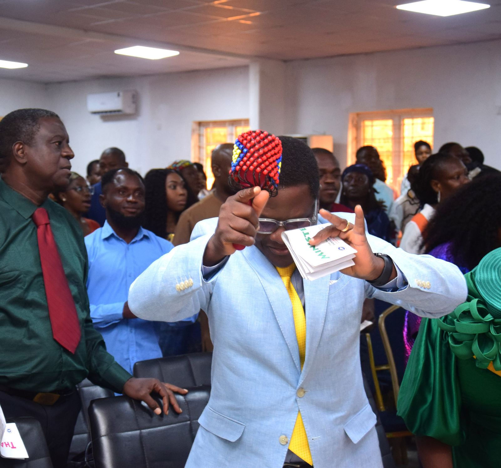
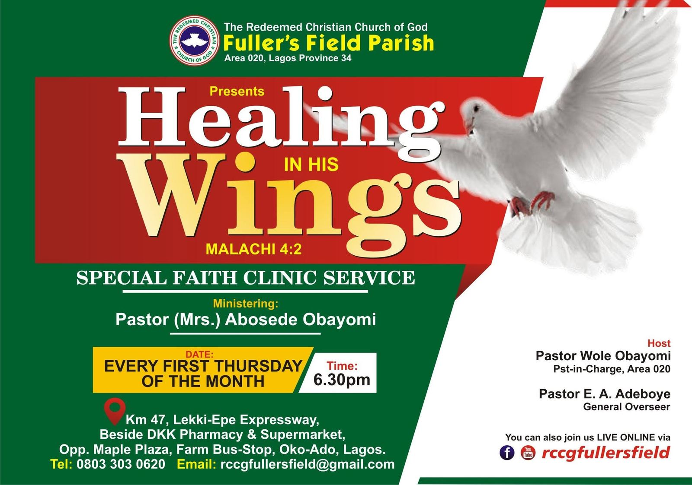
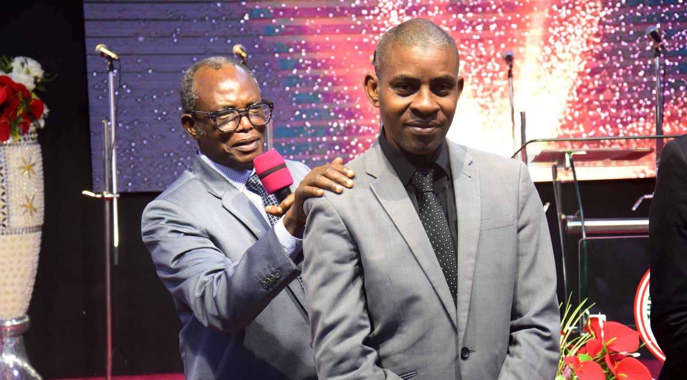
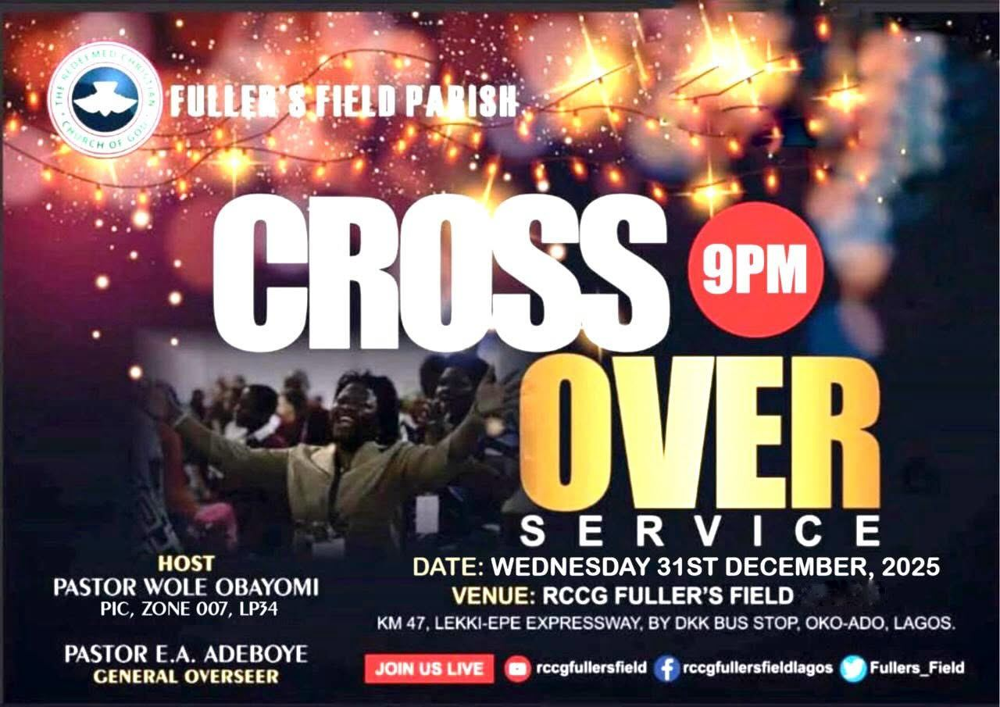
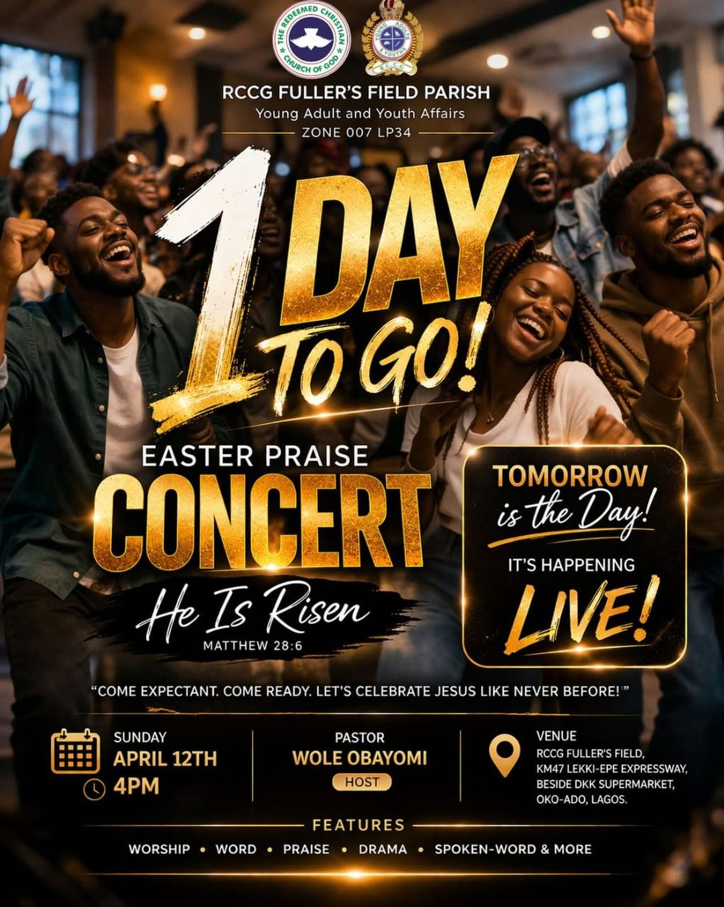
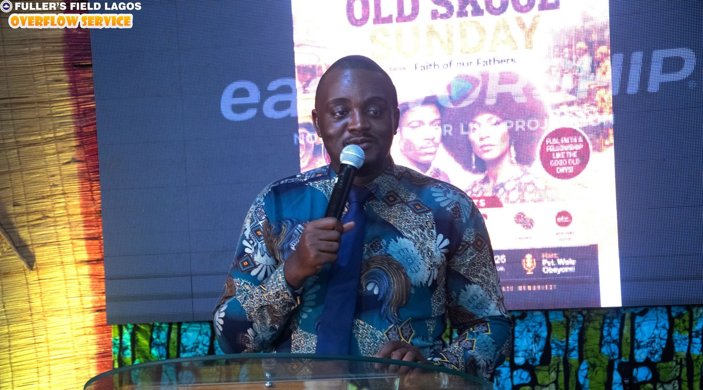
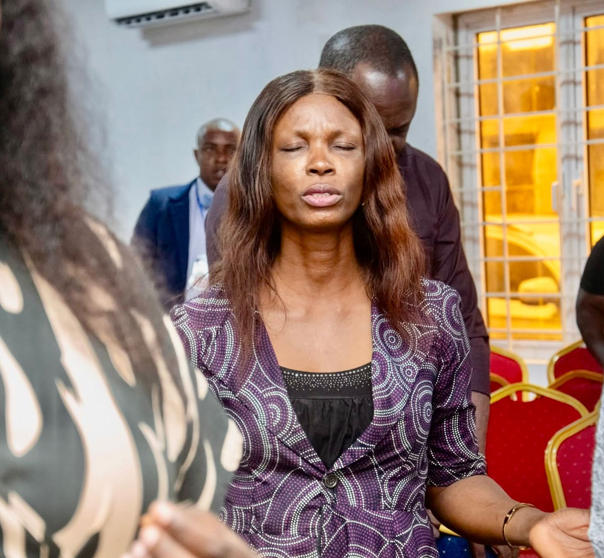
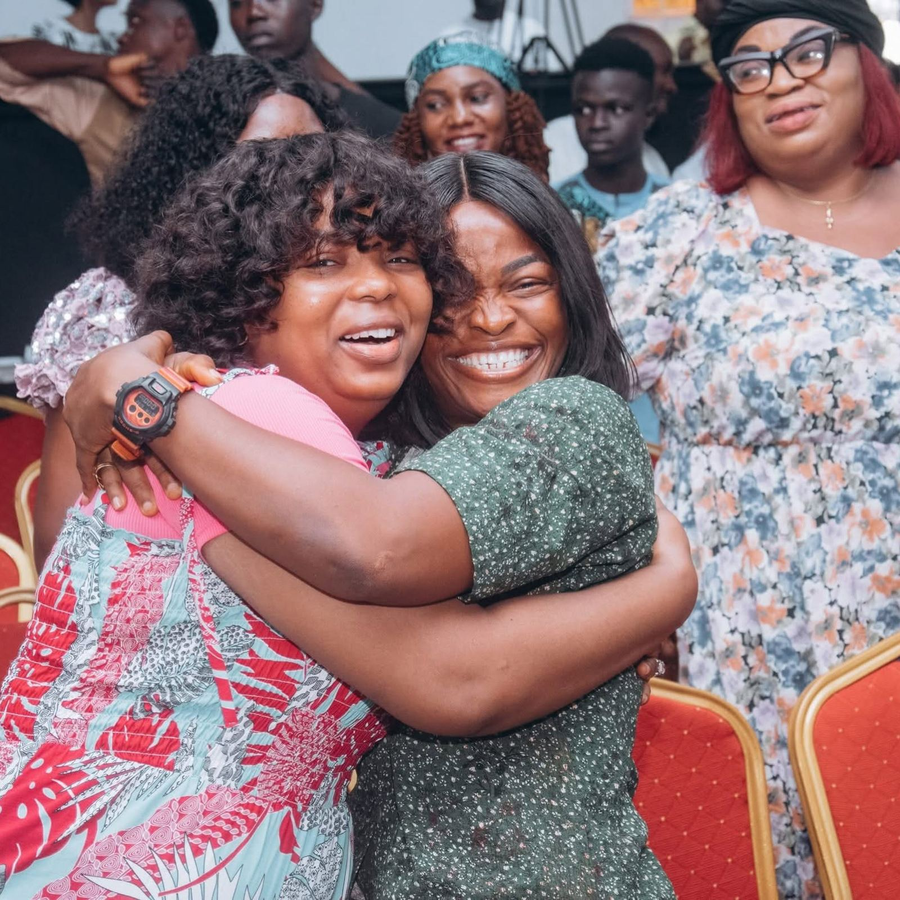
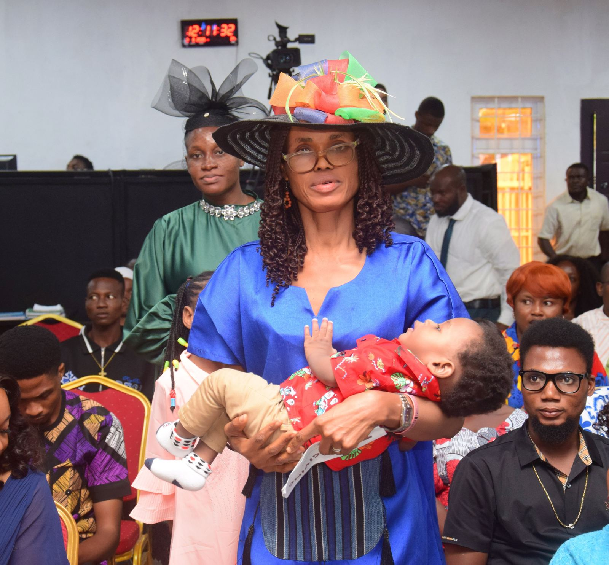
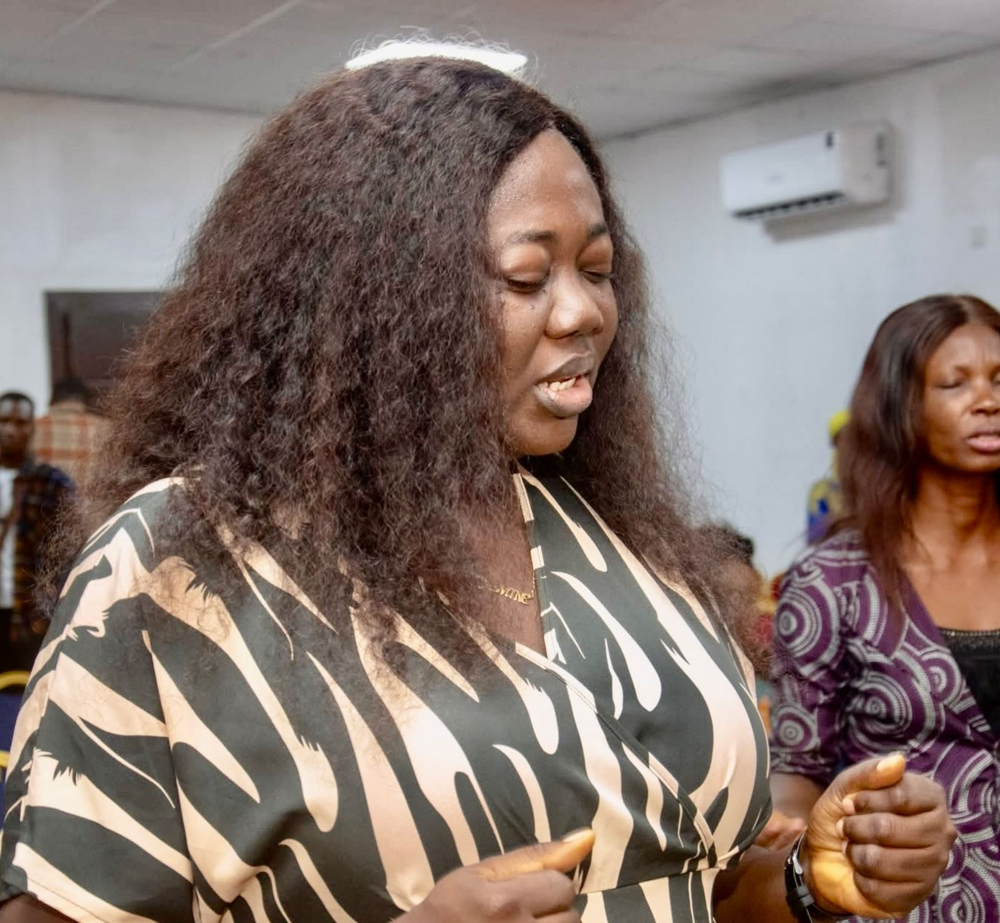

Welcome to Fuller's Field.
A parish of The Redeemed Christian Church of God on the Lekki–Epe Expressway. Come and worship with us this Sunday at 7:30am or 10:30am.



Worship service times
Every service also streams live on YouTube and Facebook at @rccgfullersfield.
Sunday mornings
Every weekDigging Deep
6:30 – 7:45pm
Interactive midweek Bible study. Bring your Bible and your questions.
Faith Clinic
6:30 – 7:45pm
An evening of powerful prayer for healing, help and breakthrough.
Arise and Shine
Thanksgiving, prayer and breakthrough during the 10:30am service.
Welcome home
Whether this is your first visit or you have worshipped with us for years, I am glad you are here.
Fuller's Field is a family that loves God, loves people and does good. Whatever season you are in, there is a seat for you, a family to belong to and a God who has a purpose for your life.
“I was glad when they said unto me, Let us go into the house of the LORD.”
Psalm 122:1Pastor Wole ObayomiPastor-in-Charge, RCCG Fuller's Field
Your first Sunday
What to know before you come, so you can walk in feeling at home.
When you arrive
Our ushers will meet you at the door and help you find a seat. There is no dress code: come as you are.
Bringing children
Children's church runs during service, so kids learn about Jesus in a way they understand while you worship.
Can't come in person?
Every service streams live on YouTube and Facebook at @rccgfullersfield, wherever you are in the world.
Find us
Km 47, Lekki–Epe ExpresswayBeside DKK Pharmacy & Supermarket
Opposite Maple Plaza, Farm Bus Stop
Oko-Ado, Sangotedo, Lagos
- Phone
- 0803 303 0620
- rccgfullersfield@gmail.com
Find your people
Each ministry is a smaller family where you can grow, be known and serve. All ministries
Hope of Nations
Our youth and young adults ministry: worship, the Word and real conversations.
Visit the Hope of Nations page
Children's Church
A safe, joyful place for children to meet Jesus every Sunday.
Visit the Children's Church page
Wise Women
Fellowship, prayer and the wisdom of women who have walked with God.
Visit the Wise Women page
Wise Men
Brotherhood, mentoring and prayer for the fathers of our church.
Visit the Wise Men pageServe in God's house
Sundays at Fuller's Field run on willing hands. Find a department that fits your gifts.
Become a worker
Every worker at Fuller's Field starts with Workers in Training (WIT), the RCCG course that grounds you in the faith and prepares you to serve.
- Worship with usBe part of the Fuller's Field family on Sundays.
- Register for WITSign up at the parish office or by email.
- Join a departmentPick where you want to serve and start after training.
Coming up
Tap any event to see the flyer and details. All events
-
–
Healing in His Wings
First Thursday of every month, 6:30pm. Next:
A special Faith Clinic service of prayer for healing and restoration.
View flyer & details- Ministering: Pastor (Mrs.) Abosede Obayomi
- Host: Pastor Wole Obayomi, Pastor-in-Charge
- Theme scripture: Malachi 4:2
- Venue: RCCG Fuller's Field, Km 47 Lekki–Epe Expressway, beside DKK Pharmacy & Supermarket, Oko-Ado, Lagos
- Can't come? Join live on YouTube and Facebook at @rccgfullersfield.

-
–
Arise and Shine
Third Sunday of every month, 10:30am. Next:
Our monthly service of thanksgiving, prayer and breakthrough.
View flyer & details- Held during the 10:30am second service
- Come with your testimonies, thanksgiving and prayer requests
- Venue: RCCG Fuller's Field, Km 47 Lekki–Epe Expressway, beside DKK Pharmacy & Supermarket, Oko-Ado, Lagos

-
31Dec
Crossover Service
31 December, 9pm until we cross into the new year
We end the year in worship and thanksgiving and pray into the new one together. Bring the whole family.
View flyer & details- Host: Pastor Wole Obayomi
- Starts 9pm on 31 December
- Venue: RCCG Fuller's Field, Km 47 Lekki–Epe Expressway, beside DKK Pharmacy & Supermarket, Oko-Ado, Lagos
- Join live on YouTube at @rccgfullersfield.

-
EasterYearly
Easter Praise Concert
Every Easter season, 4pm. Last held Sunday 12 April 2026
Hope of Nations and the Young Adult and Youth Affairs team celebrate the risen Christ in song.
View flyer & details- Worship, the Word, praise, drama, spoken word and more
- Host: Pastor Wole Obayomi
- Theme: He Is Risen (Matthew 28:6)
- The 2027 date will be announced here before Easter.

Sundays at Fuller's Field









Give
Your tithes and offerings keep the doors open, support families in need and carry the gospel further. Thank you for giving.
Tithe, first fruit & love offering
Ecobank Nigeria. Account name: RCCG Fuller's Field